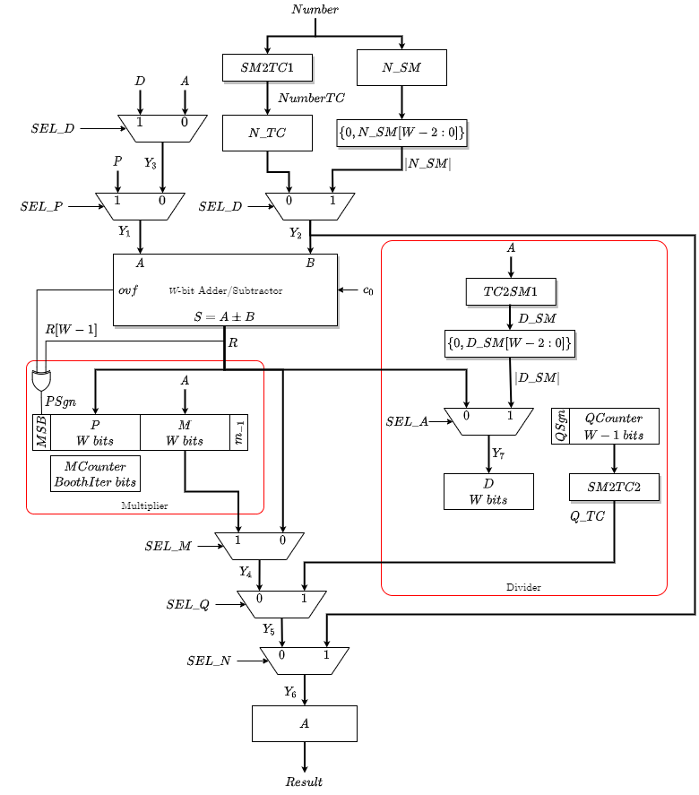

rtl four function calculator on fpga

overview
this project implements a sequential four-function calculator supporting addition, subtraction, multiplication, and division on 11-bit two's-complement operands, designed and verified at the RTL level. the architecture is controlled by a finite-state machine (FSM) that coordinates multi-cycle arithmetic operations, including a ripple-carry adder for addition/subtraction, a Booth-encoded multiplier for efficient signed multiplication, and an integer quotient-based divider for sequential division.
the design was implemented in Verilog and deployed on the DE2-115 FPGA, with functional correctness and edge-case behavior verified using ModelSim simulation.
tools
- verilog, modelsim, quartus